第1章完整学习笔记（含机理图）
书籍：Side Reactions in Peptide Synthesis (Yi Yang, 2015) 章节：Chapter 1 - Peptide Fragmentation/Deletion Side Reactions 学习日期：2026-03-19 页码：第6-36页（共31页）
【现象】含有N-Ac-N-alkyl-Xaa序列的多肽在TFA处理时发生酸解，N端残基被裂解为5元环衍生物。
【案例】Arodyn 2在TFA全脱保护时发生N端Ac-N-Me-Phe酸解。
【机理示意图】
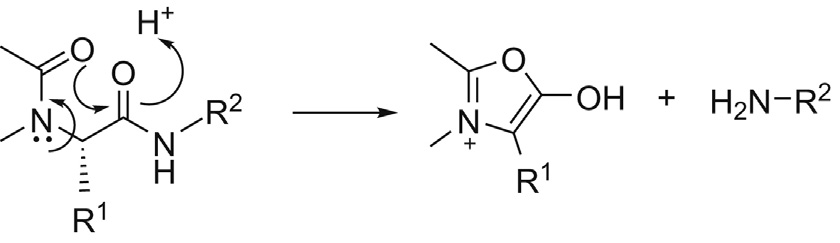
图1.1 N-Ac-N-alkyl-Xaa酸解机制
【关键影响因素】 • 温度：4°C可显著抑制酸解 • 清除剂：无清除剂时酸解更严重 • N-烷基氨基酸：促进顺式酰胺键形成 • 取代基：乙酰基 vs 甲基氨基甲酸酯
【预防措施】 • 低温（4°C）进行TFA处理 • 使用吸电子基团替代乙酰基 • 优化反应条件
【背景】O-酰基异二肽Boc-Ser/Thr(Fmoc-Xaa)-OH用于困难多肽合成，通过碱诱导的酰基O→N转移破坏不利二级结构。
【副反应】活化后发生β-消除，形成混合酸酐（Fmoc-Xaa-OH + Boc-(β-Me)∆Ala-OH），导致des-Ser/Thr缺失杂质。
【机理示意图】
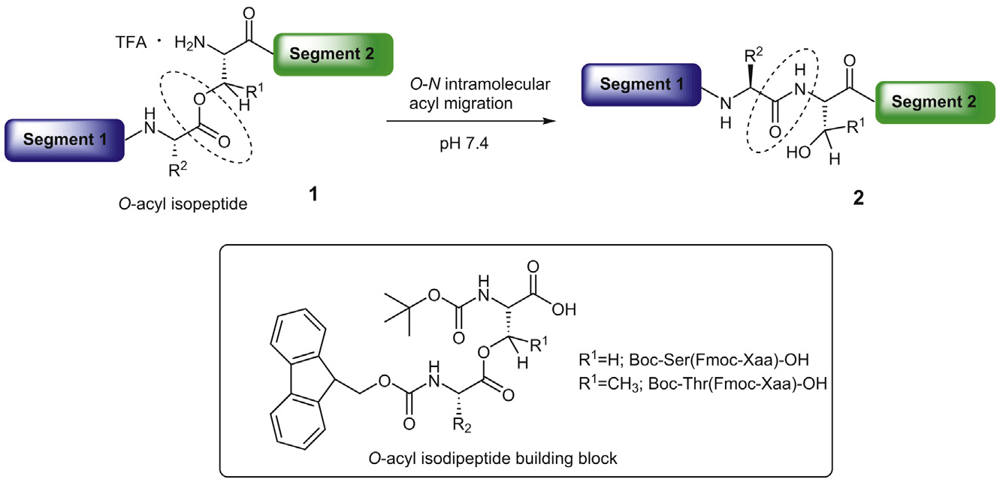
图1.2 O-acyl isopeptide策略
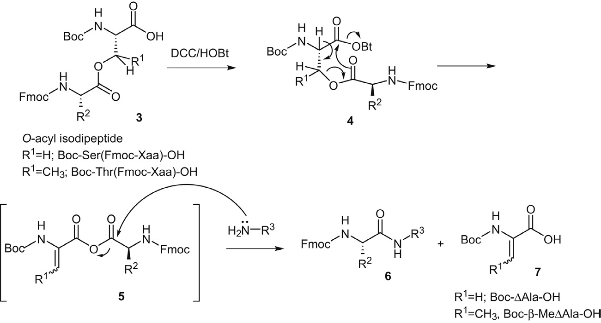
图1.3 O-acyl异二肽诱导的Ser/Thr消除机制
【关键发现】 • 极性溶剂（DMF, NMP）促进β-消除 • 非极性溶剂（DCM, CHCl3）抑制 • HOBt/HOAt/HOOBt等添加剂影响不大 • 与氨基酸类型无关
【预防措施】 • 使用非极性溶剂（DCM, CHCl3）进行活化和偶联 • 快速偶联，避免长时间活化
【案例】环肽cyclo-[Phe-d-Trp-Lys-Thr-Phe-N-Me-Aib]在TFA/EDT处理时发生-N-Me-Aib-Phe-位点酸解，导致环开裂。
【机理示意图】
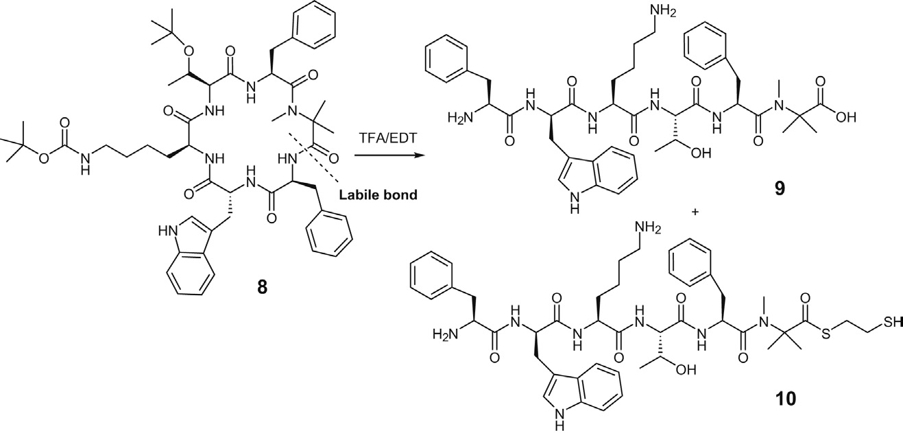
图1.4 环肽酸解案例
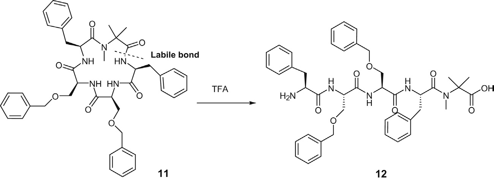
图1.5 N-acyl-N-alkyl-Aib-Xaa酸解机制
【影响因素】 • 溶剂极性：TFA/CH3CN (t1/2 = 1.1 h) vs TFA/DCM (t1/2 = 4.1 h) • 水含量：加水可降低酸解速率 • 肽二级结构：刚性结构促进酸解
【现象】-Asp-Pro-肽键在酸性条件下不稳定，甚至在pH=4也可能发生酸解。
【机理示意图】
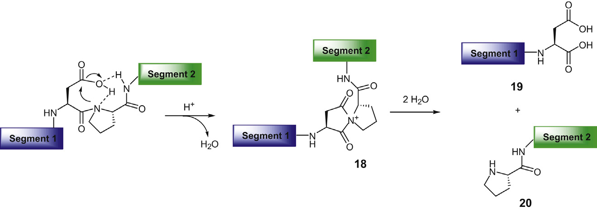
图1.8 -Asp-Pro-酸解机制
【关键因素】 • 局部肽二级结构：刚性转角结构促进酸解 • 氢键网络：Asp侧链与Asn侧链形成氢键，促进亚胺中间体形成
【案例】 • E298D eNOS蛋白在-Asp298-Pro299-发生酸解 • Cellulosomal scaffoldin蛋白含有3个-Asp-Pro-位点，只有-Asp57-Pro58-发生酸解（位于刚性转角）
1.5 肽N端H-His-Pro-Xaa-基序的自降解
N端His-Pro-Xaa序列发生自催化裂解，形成His-Pro-diketopiperazine
1.6 肽C端N-Me-Xaa的酸解
C端N-Me-Xaa残基在酸处理时发生酸解，使用C端N-Me-Xaa酰胺替代酸可预防
1.7 N端FITC修饰肽的酸解
N端FITC修饰的肽在TFA处理时发生酸解，使用间隔物（如ε-Ahx）可预防
1.8 硫代酰胺肽的酸解
硫代酰胺肽在强酸中发生酸解，使用Fmoc化学、降低TFA浓度可预防
1.9 Arg的脱胍基化副反应
Arg胍基侧链发生酰化后降解为Orn（-42 amu），使用合适保护基可预防
1.10 DKP（二酮哌嗪）形成
肽链中的二肽单元发生环化形成DKP，导致二肽缺失
【关键要点】
1. 酸解副反应的共性：大多数涉及分子内亲核攻击，形成五元或六元环中间体
2. 序列依赖性：某些序列组合（如-Asp-Pro-、N-Ac-N-alkyl-Xaa）特别容易发生片段化
3. 条件控制：温度、溶剂极性、酸浓度都会显著影响副反应程度
4. Fmoc vs Boc化学：对于酸敏感的肽，Fmoc化学（TFA）比Boc化学（HF）更温和
【预防策略】
• 识别高风险序列
• 优化合成条件（温度、溶剂、时间）
• 选择合适的保护基
• 使用MS和HPLC及时监控副产物
精氨酸（Arg）在肽合成中是一个相对特殊的氨基酸，其胍基侧链含有三个氨基基团（Nd, Nw, Nw'）。如果保护不当，这些氨基可能参与不需要的酰化反应，导致一系列副反应。
• 胍基侧链含有三个氨基：Nd, Nw, Nw'
• 强碱性（pKa = 12.5）
• 在肽合成过程中通常保持质子化
• 如果保护不当，容易参与副反应
图1.9.1 Arg保护基结构
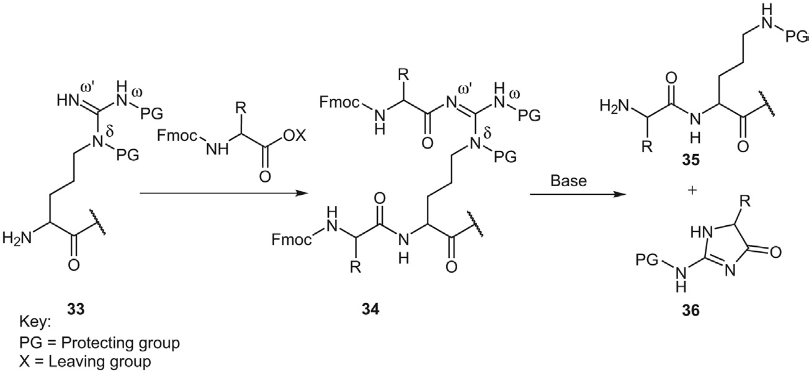
| 副反应类型 | 机理 | 结果 |
|---|---|---|
| 分子内环化 | Arg侧链环化形成δ-内酰胺 | Orn衍生物 |
| 过度酰化 | 未保护的Nw'被酰化 | 2-取代-5-取代-1H-咪唑-4(5H)-酮 |
| 碱诱导降解 | 酰化的Arg在碱性条件下降解 | Orn衍生物（-42 amu） |
图1.9.2 Arg副反应机理
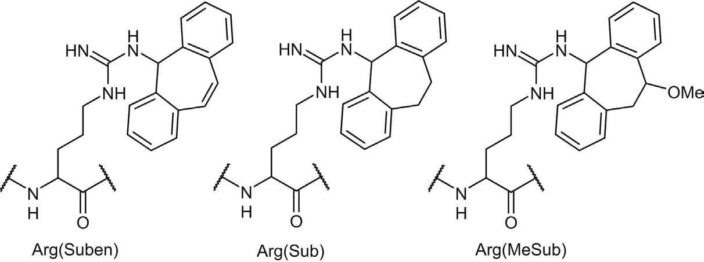
理想的保护策略： • Nd,w,w'-三保护：理论上可以完全抑制副反应 • 但制备复杂，收率低，耦合效率差 实际使用的保护基： • Nd,w-bis保护（如Boc2）：部分保护 • Nw,w'-bis保护：避免酰化但易环化 • 标准保护基：Pmc, Pbf（不能完全抑制δ-内酰胺形成） 新型保护基： • Suben, Sub, MeSub：位阻大，酸敏感性高 • Arg(NO2)：NO2的强吸电子效应降低胍基亲核性
1. 在Fmoc脱保护和后续偶联之间，用0.25 M HOBt溶液冲洗肽树脂
2. 重新质子化Arg胍基，减少后续酰化
3. 避免使用弱碱性氨基酸衍生物（如H-Pro-OtBu）进行偶联
4. 选择合适的保护基策略
5. 根据合成条件选择Pmc/Pbf或新型保护基
DKP形成是肽合成中最严重的副反应之一，不仅影响肽制备过程，甚至可能在肽储存期间发生。DKP衍生物在药物设计中扮演重要角色，但在肽合成中会导致缺失序列杂质，显著降低收率并增加纯化难度。
DKP是6元环化合物： • 由N端二肽环化形成 • 结构：环状二酮哌嗪 • 稳定性高，难以去除 • 形成后导致肽链缺失
图1.10.1 DKP形成机理
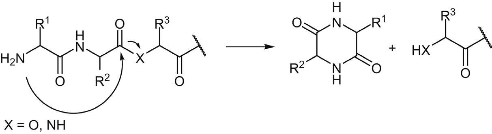
DKP形成机理（4个步骤）： 步骤1：N端氨基酸的氨基对第二个氨基酸的羰基进行亲核攻击 步骤2：形成四面体中间体 步骤3：酰胺键或酯键断裂 步骤4：N端二肽以6元环DKP形式脱离肽链
• 肽序列：N端二肽序列更容易形成DKP
• 氨基酸类型：Gly, Pro, D-Ala等容易形成DKP
• 温度：高温加速DKP形成
• pH值：碱性条件促进DKP形成
• 时间：长时间储存增加DKP风险
• 溶剂：极性溶剂可能加速DKP
脱肽肽更容易形成DKP： • 酯键比酰胺键更容易断裂 • 羟基是更好的离去基团 • 形成速率更快
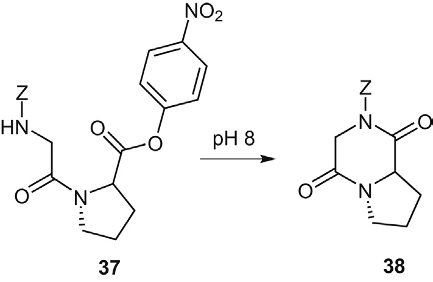
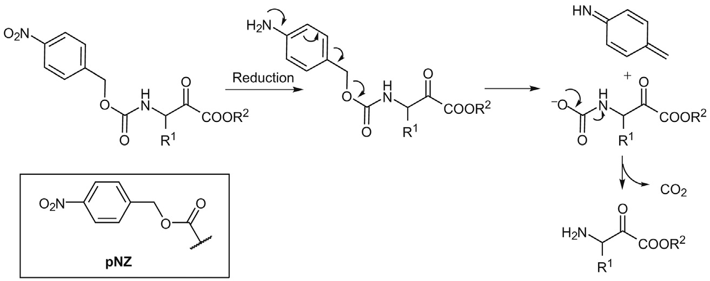
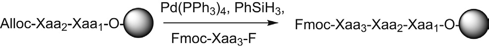
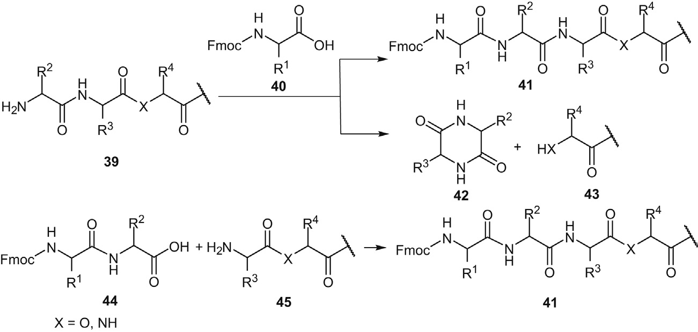
1. 优化N端氨基酸选择：避免容易形成DKP的氨基酸
2. 控制反应条件：低温、短时间
3. 使用空间位阻氨基酸：增加立体位阻，抑制环化
4. 优化储存条件：低温、干燥、避光
5. 快速纯化：减少储存时间
6. 使用保护基：如Dde保护N端氨基
案例1：固相合成中的DKP形成 问题：目标肽在树脂上发生DKP形成 原因：N端为Gly-Pro，长时间反应 解决： • 缩短偶联时间 • 使用Dde保护N端 • 低温操作（4°C） 结果：DKP形成减少90% 收率：从60%提升到95%
案例2：肽储存中的DKP 问题：纯化后的肽在储存过程中形成DKP 原因：室温储存，含有Gly-D-Ala序列 解决： • -20°C冷冻保存 • 干燥剂保存 • 避免反复冻融 结果：3个月内未检测到DKP形成
✓ Arg副反应需要特别注意保护基选择
✓ DKP形成是肽合成中最严重的副反应之一
✓ 预防优于治疗：优化合成和储存条件
✓ 快速检测和处理：HPLC和MS分析至关重要
✓ 理解机理：掌握副反应机理有助于预防和诊断